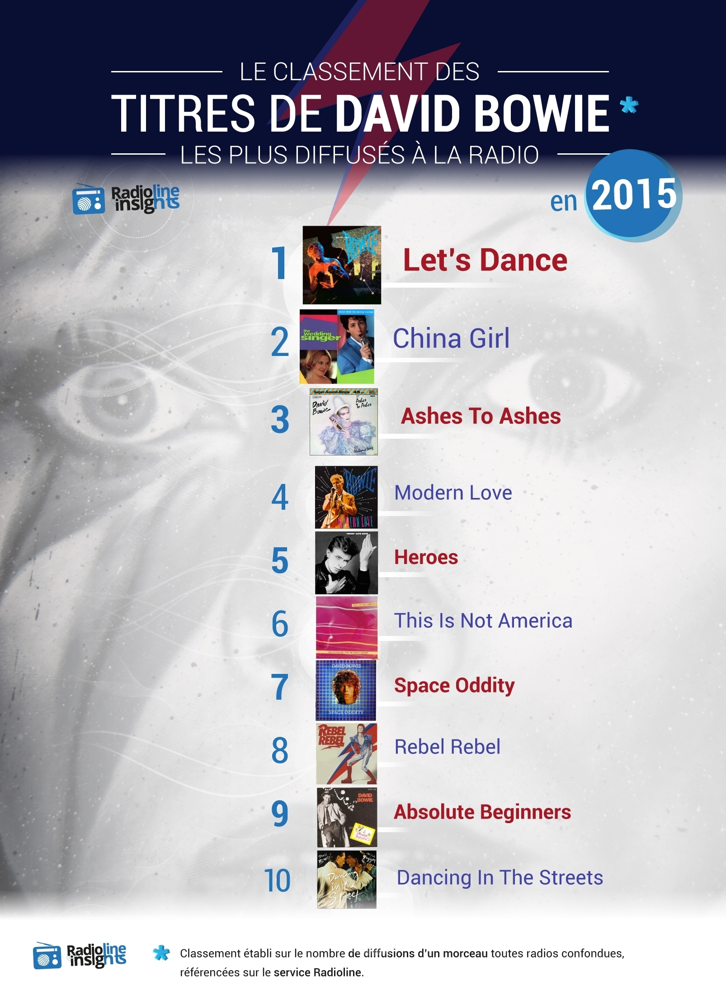

The hashtags most tweeted in january 2016 (related to french radio shows)

The tracks most broadcasted from David Bowie in 2015 on radio stations, RIP Mr.
Monthly infographics created using Radioline data like tracks/artists/stations or shows most listened/zapped, sometimes using differentiating factors such as gender, keywords or mentions on social networks.